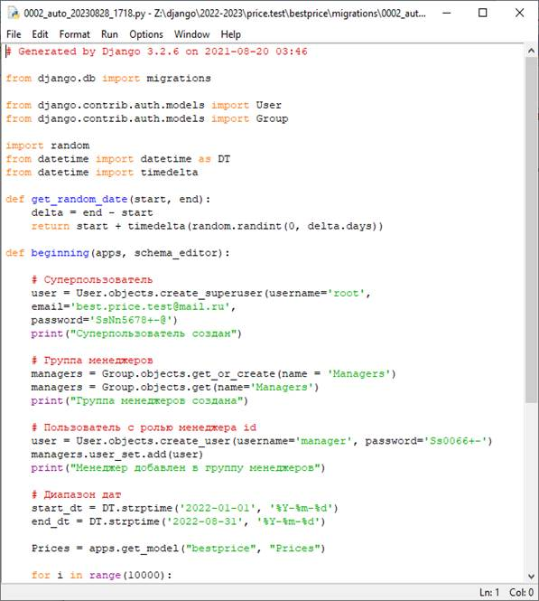

Цель практической работы: закрепление и расширение знаний, полученных обучающихся при теоретическом изучении предмета, приобретение конкретных практических навыков создания базы данных с использованием фреймворка Django.
Методические указания к выполнению работы:
Для хранения данных в веб-приложении, как правило, применяются базы данных. При этом фреймворк Django уже по умолчанию предоставляет удобный функционал для работы с различными системами баз данных.
База данных создается с использованием pgAdmin.
Для работы с базами данных в проекте Django в файле settings.pyопределен параметр DATABASES.
Конфигурация каждого подключения может состоять из ряда параметров, по умолчанию указываются только два параметра. Параметр ENGINE указывает на используемый движок для доступа к БД. В данном случае это пакет django.db.backends.postgresql_psycopg2.
NAME указывает на путь к БД.
USER имя пользователя БД.
PASSWORD пароль пользователя БД.
HOST хост базы данных.
PORT порт для подключения.
Пример настройки локального подключения к БД:
DATABASES = {
'default': {
'ENGINE': 'django.db.backends.postgresql_psycopg2',
'NAME': 'price',
'USER' : 'customer',
'PASSWORD' : 'customer',
'HOST' : '127.0.0.1',
'PORT' : '5432',
}
}
Пример настройки сетевого подключения к БД:
DATABASES = {
'default': {
'ENGINE': 'django.db.backends.postgresql_psycopg2',
'NAME': 'price_gezx',
'USER' : 'price_admin',
'PASSWORD' : '4sZR3Weoa7NemVbuw8pyGZibh8Y3OO26',
'HOST' : 'dpg-cib6ful9aq03rjma9080-a.frankfurt-postgres.render.com',
'PORT' : '5432',
}
}
Для работы с БД в файле settings.pyдолжны быть подключены приложения:
INSTALLED_APPS = [
'django.contrib.admin',
'django.contrib.auth',
'django.contrib.contenttypes',
'django.contrib.sessions',
…
]
Модели в Django описывают структуру используемых данных. Используемые в программе данные хранятся в базах данных, и с помощью моделей как раз осуществляется взаимодействие с базой данных.
При создании приложения по умолчанию в его каталог добавляется файл models.py, который применяется для определения моделей. Модель представляет класс, унаследованный от django.db.models.Model.
Для изменения файла models.py введем следующий код:
from django.db import models
class Prices(models.Model):
datep = models.DateTimeField("Дата")
store = models.CharField("Место покупки", max_length=128)
product = models.CharField("Продукт (товар)", max_length=256)
cost = models.DecimalField("Цена", max_digits=6, decimal_places=2)
details = models.TextField("Подробности", blank=True, null=True)
class Meta:
db_table = 'prices'
indexes = [
models.Index(fields=['datep']),
models.Index(fields=['store']),
models.Index(fields=['product']),
]
Каждая модель сопоставляется с определенной таблицей в базе данных. Поскольку в созданной БД нет таблицы, которая хранит объекты модели Prices, необходимо создать и выполнить миграцию. Миграция преобразует базу данных в соответствии с определением моделей.
Для этого, прежде всего, необходимо создать миграцию с помощью следующей команды:
python manage.py makemigrations
После этого в приложении в папке migrations появится новый автоматически созданный файл, имеющий примерно следующее содержимое:
from django.db import migrations, models
class Migration(migrations.Migration):
initial = True
dependencies = [
]
operations = [
migrations.CreateModel(
name='Prices',
fields=[
('id', models.BigAutoField(auto_created=True, primary_key=True, serialize=False, verbose_name='ID')),
('datep', models.DateTimeField(verbose_name='Дата')),
('store', models.CharField(max_length=128, verbose_name='Место покупки')),
('product', models.CharField(max_length=256, verbose_name='Продукт (товар)')),
('cost', models.DecimalField(decimal_places=2, max_digits=6, verbose_name='Цена')),
('details', models.TextField(blank=True, null=True, verbose_name='Подробности')),
],
options={
'db_table': 'prices',
'indexes': [models.Index(fields=['datep'], name='prices_datep_906236_idx'), models.Index(fields=['store'], name='prices_store_3a7df0_idx'), models.Index(fields=['product'], name='prices_product_519819_idx')],
},
),
]
Это и является миграцией. Здесь важно отметить, что создается не пять, а шесть полей - поле id, которое будет представлять первичный ключ, добавляется по умолчанию. Поэтому в принципе в самой модели нет необходимости явным образом определять какой-либо идентификатор.
Для заполнения таблицы «prices» начальными данными можно воспользоваться миграцией данных. Создать пустую миграцию (Django создаст файл миграции, положит его в правильное место, создаст название и добавит необходимые зависимости). Название и расположение файла будет выведено на экран монитора. Для этого необходимо выполнить следующую команду:
python manage.py makemigrations --empty bestprice
здесь bestprice –имя созданного в работе приложения.
Далее нужно внести изменения в автоматически созданный файл.
# Generated by Django 3.2.6 on 2023-08-28 03:46
from django.db import migrations
from django.contrib.auth.models import User
from django.contrib.auth.models import Group
import random
from datetime import datetime as DT
from datetime import timedelta
def get_random_date(start, end):
delta = end - start
return start + timedelta(random.randint(0, delta.days))
def beginning(apps, schema_editor):
# Суперпользователь
user = User.objects.create_superuser(username='root',
email='best.price.test@mail.ru',
password='SsNn5678+-@')
print("Суперпользователь создан")
# Группа менеджеров
managers = Group.objects.get_or_create(name = 'Managers')
managers = Group.objects.get(name='Managers')
print("Группа менеджеров создана")
# Пользователь с ролью менеджера id
user = User.objects.create_user(username='manager', password='Ss0066+-')
managers.user_set.add(user)
print("Менеджер добавлен в группу менеджеров")
# Диапазон дат
start_dt = DT.strptime('2022-01-01', '%Y-%m-%d')
end_dt = DT.strptime('2022-08-31', '%Y-%m-%d')
Prices = apps.get_model("bestprice", "Prices")
for i in range(10000):
prices = Prices()
prices.datep = get_random_date(start_dt, end_dt)
prices.store = 'Магазин ' + str(random.randint(1,10))
prices.product = 'Товар ' + str(random.randint(1,1000))
prices.cost = random.randint(100,5000)
prices.details = ''
prices.save()
print(i)
class Migration(migrations.Migration):
dependencies = [
('bestprice', '0001_initial'),
]
operations = [
migrations.RunPython(beginning),
]

За добавление данных в таблицу «prices» отвечает следующий фрагмент кода:
for i in range(10000):
prices = Prices()
prices.datep = get_random_date(start_dt, end_dt)
prices.store = 'Магазин ' + str(random.randint(1,10))
prices.product = 'Товар ' + str(random.randint(1,1000))
prices.cost = random.randint(100,5000)
prices.details = ''
prices.save()
Далее необходимо выполнить миграцию:
Созданная база данных готова к работе.
Задание:
Создать согласно варианту базу данных и заполнить таблицы созданной базы данных записями с использованием фреймворка Django.
Контрольные вопросы:
1. Параметр для работы с базами данных в проекте Django в файле
2. Для чего предназначен файл models.py при создании приложения?
3. Команда для создания миграции.